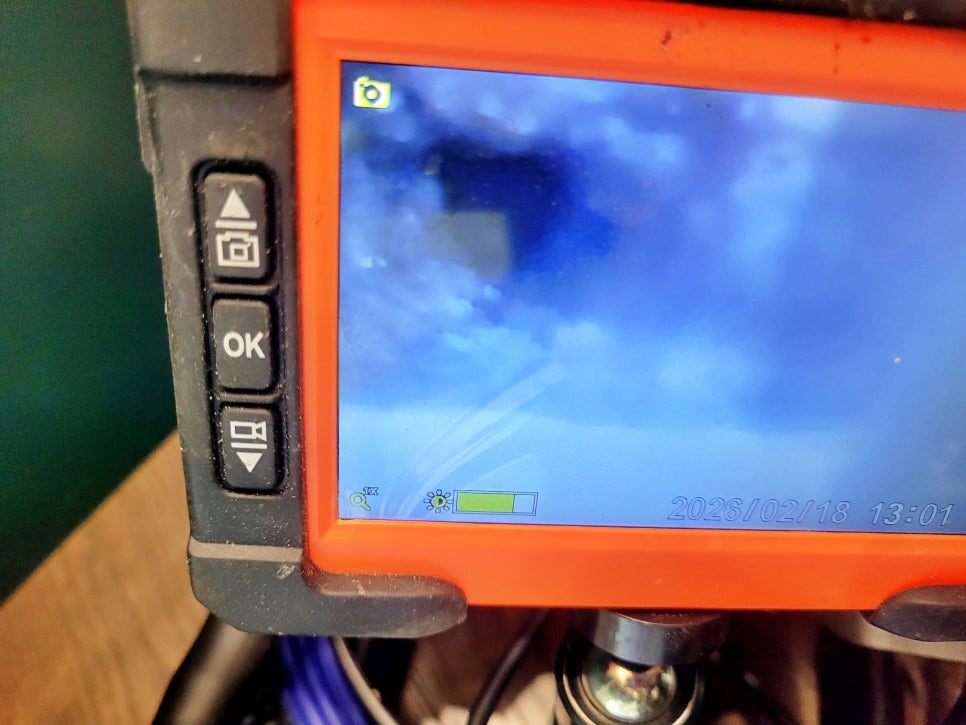
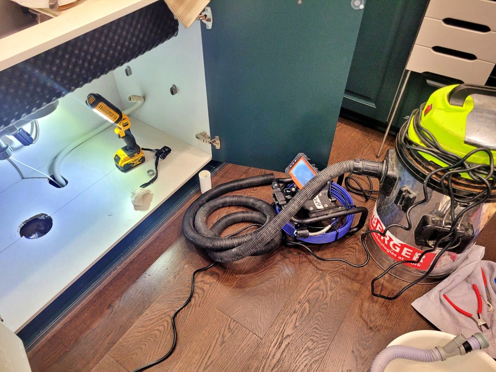
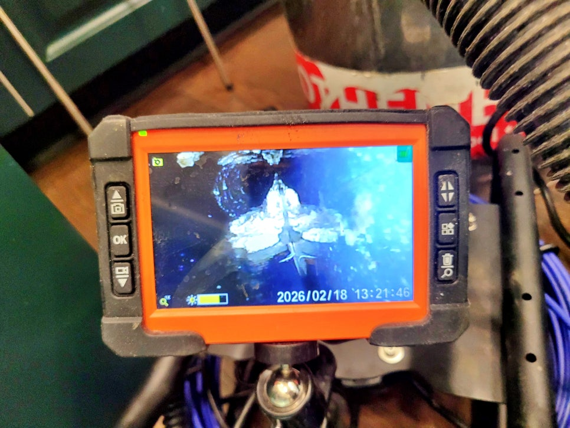
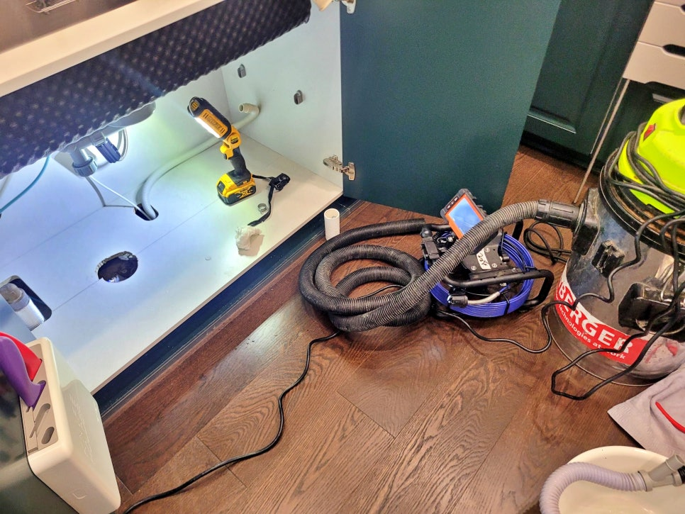
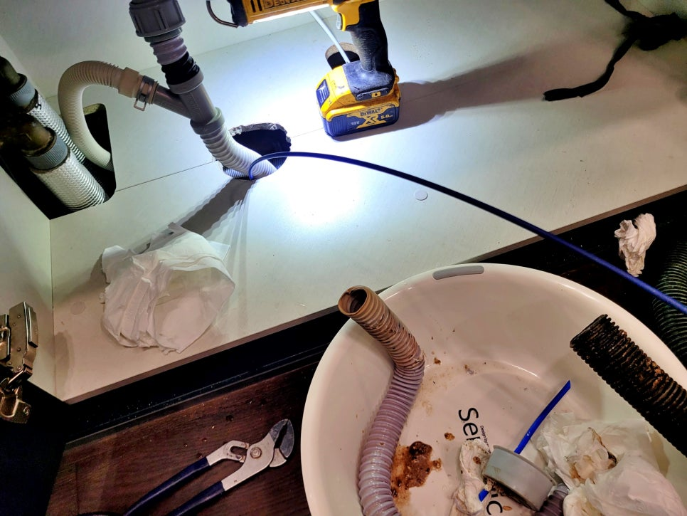
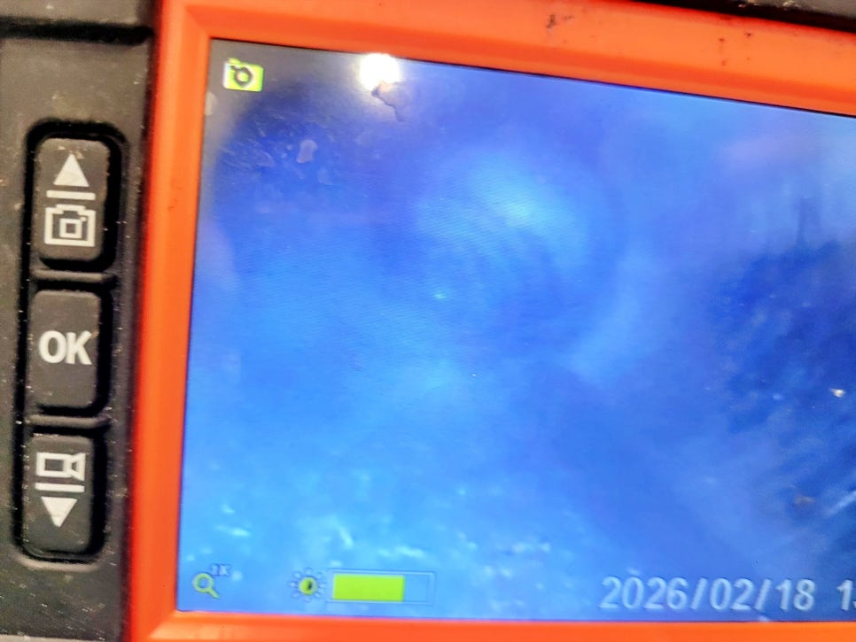

🏠 동탄 석우동 싱크대 배관막힘, 주방 배수구 청소 사례
화성 석우동 싱크대막힘 전문 시공 후기

📋 작업 개요
- 위치: 화성 석우동, 석우동, 화성
- 서비스 유형: 싱크대막힘, 하수구막힘, 배관막힘, 역류해결, 뚫는업체, 배관청소
- 작업 일시: 2026. 3. 20. 18:12
- 업체명: 하수구수사대 (010-5615-2118)
🔍 문제 상황
화성 동탄 석우동 싱크대 배관막힘,
아파트 주방 싱크대 배수구 막힘 청소
사례를 소개합니다.
환영합니다.
화성 동탄 석우동 싱크대막힘 배관청소
전문업체 하수구수사대 인사드립니다.
이번 현장은 동탄 석우동 빌라 가정집
주방 싱크대 물이 시원하게 내려가지
않고, 설거지를 조금만 해도 물이
차오르는 문제로 의뢰한 사례인데요.
동탄 석우동 싱크대 배관막힘 현장에
도착해 싱크대 하부장을 열어보니
배수 호수와 배관 주변으로 오염물이
역류해 넘친 흔적도 확인됐습니다.
그럼 지금부터 이번 현장의 문제
원인과 배관 청소 과정을 상세히
살펴보겠습니다.
동탄 석우동 주방 싱크대 배수구 청소
먼저 배수 라인의 구조를 내시경
카메라를 통해 파악했고요.

🔎 원인 분석
💡 전문가 진단: 화성 동탄 석우동 싱크대 배관막힘,아파트 주방 싱크대 배수구 막힘 청소사례를 소개합니다.
💡 전문가 진단: 화성 동탄 석우동 싱크대 배관막힘,아파트 주방 싱크대 배수구 막힘 청소사례를 소개합니다.
싱크대 하부 배관과 연결 상태를
차근차근 점검해 보니, 단순 트랩
문제보다는 배수구 안쪽에 많은
기름 찌꺼기와 슬러지가 쌓였을
가능이 매우 높았습니다.
싱크대 배관 내시경 카메라 점검 과정
동탄 석우동 싱크대 배관막힘 원인을
정확히 파악하기 위해 내시경 카메라
장비를 투입했는데요.
화면상으로도 배관 내부가 이물질에
막혀 있었고, 일부 구간은 굳은 기름이
통로를 거의 막고 있는 상태였습니다.
고객님께 우선 내시경 카메라로
촬영한 화면을 확인시켜드렸으며
이후 고성능 석션 장비로 입구에
이물질과 기름을 제거했습니다.
기름 외에도 위 화면에 보이는 것처럼
배수 호수가 너무 오래되고 기름으로
가득차 물이 제대로 내려가지 못하고
있었는데요.
이번 기회에 배관 청소 대신 새 호스로

🔧 작업 과정
교체하며 완만했던 기울기도 조정해
배수가 원활하도록 조치했습니다.
플렉스 샤프트 장비로 배관 벽면에
붙은 기름때와 침전물을 제거하고,
석션 장비로 떨어져 나온 오염물을
바로 회수해 주방 안쪽으로 역류하지
않도록 깔끔하게 청소했는데요.
주방 싱크대 배수구 막힘 구간에
청소 작업을 진행할수록 배관 내부에서
묵은 찌꺼기들이 계속해 빠져나왔고,
배수 호수 주변에 남아 있던 오염도
함께 제거되면서 그동안 풍기던 악취
문제 또한 줄일 수 있었습니다.
화성 동탄 싱크대 배관막힘 청소 작업
중간중간 내시경으로 다시 들여다보며
막혔던 구간이 제대로 뚫렸는지 꼼꼼히
살펴본 뒤
배관 안쪽 통로가 한층 넓어지고
물이 지나갈 길이 확보된 것을 보고
고객님께도 직접 확인시켜드렸고요.
마지막 배수 테스트를 진행해
싱크대 수조에 많은 물이 시원한
소리와 함께 소용돌이를 일으키며
내려가는 모습도 확인했습니다.
싱크대 배관 청소 후기를 마치며
오늘 소개한
동탄 석우동 싱크대 배관막힘 원인은
첫 번째 배관 내부에 쌓였던 기름과
이물질 때문이고요.
두 번째 원인은 바로 배수 호수가
오래되고 노후되어 내부에 묵은
찌꺼기들 때문이었습니다.
하수구수사대가 석션과 샤프트


✅ 작업 완료
장비로 막힌 곳을 뚤어드렸으며,
호스는 새 것으로 교체해 앞으로
오랜 시간 같은 문제가 반복되지
않도록 조치해 드렸답니다.
그럼 이상으로
"동탄 석우동 싱크대 배관막힘 청소"
후기를 마치겠습니다.
감사합니다.
#동탄석우동싱크대배관막힘 #화성동탄싱크대막힘전문 #화성동탄싱크대배관청소 #동탄싱크대배관청소 #동탄하수구업체 #동탄석우동배관내시경 #동탄석우동하수구업체 #동탄석우동싱크대역류




⚠️ 주방 싱크대 배관 막힘 예방 수칙
- ✅ 기름기가 묻은 식기나 프라이팬은 설거지 전 키친타올로 반드시 기름때를 닦아내세요.
- ✅ 주기적으로 싱크대 개수대에 뜨거운 물을 가득 받아 한 번에 내려 배관 내부 기름을 씻어내세요.
- ✅ 배수구 거름망을 미세한 필터로 사용하시고 음식물 찌꺼기가 틈으로 새어 들지 않게 관리하세요.
- ✅ 베이킹소다와 식초를 뜨거운 물과 함께 일주일에 한 번씩 부어주면 배관 살균과 막힘 예방에 좋습니다.
💡 핵심 정리
- 확실한 장비 작업(내시경 점검 및 샤프트 스케일링)으로 원인을 뿌리 뽑습니다.
- 작업 후 1년 이내에 동일한 부위 재발 시 100% 무상 A/S 서비스를 보장합니다.
- 서울 · 경기 · 인천 전 지역에 24시간 언제든 긴급 출동할 수 있도록 항시 대기 중입니다.
❓ 자주 묻는 질문 (FAQ)
🚨 화성 석우동 싱크대막힘 문제로 고민이신가요?
정확한 원인 진단과 확실한 시공으로 재발 없는 해결을 약속드립니다.
24시간 긴급 출동 | 서울 · 경기 · 인천 전지역 | 1년 내 재발 시 무상 A/S